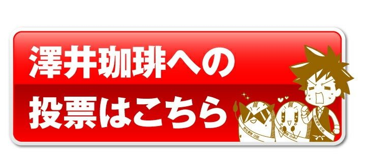
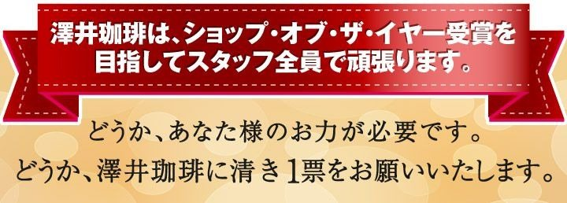
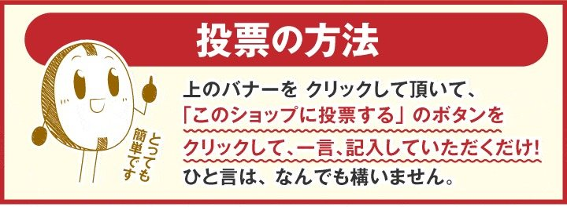

投票受付中
投票は11.30(月)09:59まで
投票すると最大10,000ポイント！合計10万名様に当たる！

澤井珈琲は
お客様と一緒に
歩んできました。
あなたからの応援が、私たちの原動力です。
澤井珈琲は、毎朝の一杯に
心を込めて焙煎を続けています。
お客様の「おいしい」の言葉に支えられ、
ここまで歩んでくることができました。
今年、ショップ・オブ・ザ・イヤーという
大きな舞台に挑戦します。
どうかあなたの1票で、
澤井珈琲を応援してください。


最大10,000ポイント！
合計10万名様に当たる！




どんな応援メッセージに
しようかな？


迷ったら、コピーして使えます
いつも美味しいコーヒーをありがとうございます。
いつも応援しています。頑張ってください。
福袋企画、ファンになっちゃいました(^ ^)
店長、頑張れ！
投票ページの応援メッセージ欄に貼り付けてお使いください
あなたの応援は、
絶対に僕らに届きます

澤井珈琲の一杯には、
たくさんの“ありがとう”が
詰まっています。
豆を焼く人、袋に詰める人、商品を届ける人。
一人ひとりが「お客様においしいと
言ってもらえる瞬間」を目標に、
日々心を込めています。
今年もSOY2026に挑戦中。
どうか、あなたの1票で
私たちの想いを応援してください。

今年も、どうか、
よろしく
お願いいたします。
投票は11月30日（月）09:59まで
投票すると最大10,000ポイント！
合計10万名様に当たる！
30種のアソート福袋 予約受付中
澤井珈琲のドリップバッグ30種が1袋ずつ楽しめる「オールスターズ30」、予約受付中！限定価格は11/15 10時まで。

澤井珈琲ってどんな珈琲屋さん？
澤井珈琲は1982年創業の焼きたてコーヒー専門店です。笑顔と感動をテーマに、砂糖なしでも楽しめるマイルドな味わいのコーヒーを提供しています。工場から製造・出荷されるコーヒーはカップに換算すると1日当たり80万杯以上！1件1件心を込めてお届けしております。

お気に入り登録でおトクな情報をGET

珈琲手帖 ー読むコーヒーの時間ー
香る楽しみに、読む楽しみを。珈琲手帖で、コーヒーの話をまとめて読めます。